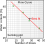
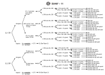
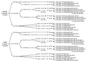
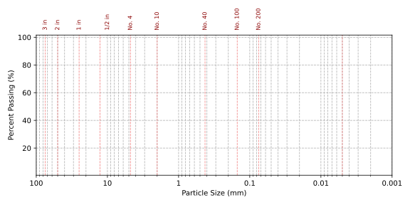

Recap
-
We learned how to plot and read GSD curves.
- We learned how to determine the soil fractions.
-
We learned how to calculate particle sizes and gradation coefficients.
Contents
- Atterberg limits
- USCS classification
- AASHTO classification
imgives covered in this lecture
- [O1]: Develop an understanding of soil phase relations, index properties, and their application to soil classification and compaction
After this lecture we will able to:
- Calculate Atterberg limits.
- Calculate the activity of clays.
- Classify soils according to the USCS and AASHTO.
Consistency of fine-grained soils
Atterberg limits are used to describe the behavior () of the fine fraction in the soil.
- If you keep adding water to the soil, it will eventually behave as a
- Water content is important, but not all soils behave the same at same water content.
- We need to map the water content to and
Plasticity
Is the degree of a soil to be without noticeable elastic rebound or volume change and without cracking or crumbling.
We use plasticity to:
- between plastic (e.g., clay) and non-plastic (e.g., silt) fines.
- Further classify soils by .
Atterberg limits
Named after soil scientist who proposed them (Albert Atterberg). The Atterberg limits are at which the behavior of soils changes.
Consistency indices
\(PI\): Is the range of water content in which the fine fraction of soils behaves as a plastic material.
\( \begin{align}
PI=LL-PL
\end{align} \)
\(LI\): is a scaling parameter that maps the natural water content to the consistency limits. it indicates how close a soil's natural water content is to its liquid limit, relative to its plasticity index
Where \(w_n\) is the natural water content of the soil.
\( \begin{align}
LI=\cfrac{w_n-PL}{PI}
\end{align} \)
Where \(w_n\) is the natural water content of the soil.
Participation question 2.5
What is the value of the liquidity index \(LI\) when \(w_n=PL\)?
- 0
- -1
- 2
- 0.5
- inf.
Participation question 2.6
What is the value of the liquidity index \(LI\) when \(w_n=LL\)?
- 0
- -1
- 2
- 0.5
- 1
![A technical diagram correlating soil states with water content and stress-strain behavior.
Top Section: A horizontal axis represents increasing 'Water content' (w) from left to right, divided into four states: 'Brittle', 'Semi-solid', 'Plastic', and 'Liquid'. The boundaries between these states are marked by limits:
'SL' (Shrinkage Limit) between Brittle/Semi-solid.
'PL' (Plastic Limit) between Semi-solid/Plastic.
'LL' (Liquid Limit) between Plastic/Liquid. Values for 'Liquidity index' (LI) are shown below the axis: LI<0 (left of PL), LI=0 (at PL), 0<LI<1 (Plastic zone), LI=1 (at LL), and LI>1 (Liquid zone). A red bracket labeled 'PI' (Plasticity Index) spans the Plastic zone.
Bottom Section: Three graphs show 'Stress-strain' curves (τ versus γ) for different water contents:
Left Graph (w<SL): A steep red curve rising linearly and terminating abruptly with a red 'X', indicating brittle fracture.
Center Graph: Shows plastic behavior with two curves. A red curve (w≈PL) rises to a peak and declines slightly (ductile). A blue curve (w≈LL) rises gradually to a plateau.
Right Graph (w>LL): A flat blue line along the horizontal axis, indicating negligible shear strength (liquid behavior).](../../Consistency_and_classification/FiguresGeneral/limits.svg.2022_01_29_17_52_10.0.svg)
Liquid limit (ASTM D4318)
\(LL\): Is the water content at which a standard groove cut in the soil will close .
- Arthur Casagrande refined the method to measure \(LL\) so that is operator independent.
- This method is known as the .
Casagrande's LL determination procedure
- Take only dry soil passing sieve 40. These are fine sands + fines.
- Rehydrate the soil and put it into the brass cup.
- Carve a grove through the soil paste using a standard grooving tool.
- Turn handle at 2 rpm to close gap.
- Stop when contact length is 13 mm
- Determine water content at this point
- Repat for different water contents so that the number of blows range from 10 to 40.

Plastic limit (ASTM D4318)
\(PL\): Is the water content at which soil crumbles when to a diameter of .
- Determined by rolling clay snakes
- Results are operator dependent.
- Repeat at least three times.
- \(PL\) is the average water content of the total number of tests performed.


Notes on Atterberg Limits
- Typical range of \(LL\) can be from 0 to 1,000, but most soils have \(LL < 100\)%.
- The \(PL\) can range from 0 to more than 100, with most soils having \(PL < 40\)%.
- These tests are performed in . This is well-mixed/blended; not the same state as in the ground.
- These tests are very arbitrary and simple
- Why do they work to categorize soil behavior?
Like many things in geotechnical engineering, they work . That is, they correlate with engineering properties because both are affected by the same things.
Soil classification
Geotechnical Engineers classify soils using the (USCS) for .
Important concepts for USCS soil classification:
- Coarse-grained soils are classified by .
- Fine-grained soils are classified by engineering behavior e.g., .
- Only sieve analysis and Atterberg Limits are used to classify soils
![A flowchart diagram illustrating the Unified Soil Classification System (USCS) process.
Top Section (Workflow):
Input parameters (Red Box): Lists necessary data: 'GSD (Gr,Sr,Fr)', 'Gradation coeffs. (Cc,Cu)', 'PI and LL', and 'Plasticity chart'.
Process (Yellow Box): Labeled 'USCS', representing the classification logic.
Output (Grey Box): Shows the results: 'Group symbol' and 'Soil name'.
Bottom Section (Example): An annotated example breaks down the classification 'SM' and name 'Silty sand with gravel':
Group Symbol 'SM':
'S' (First letter) is labeled 'First letter is for dominant fraction'.
'M' (Second letter) is labeled 'Secondary descriptor'.
Soil Name 'Silty sand with gravel':
'Silty' matches the secondary descriptor.
'Sand' is labeled 'dominant fraction'.
'with gravel' is labeled 'Tertiary descriptor'.](../../Consistency_and_classification/FiguresGeneral/classification.svg)
USCS Symbols
Primary soil symbols:
| Symbol | Description |
|---|---|
| G | Gravel |
| S | Sand |
| M | Silt |
| C | Clay |
| O | Organic soil |
Note: The M is from Swedish terms mo (very fine sand) and mjäla (silt)
Secondary soil symbols:
| Symbol | Description |
|---|---|
| W | Well graded |
| P | Poorly graded |
| H | High plasticity |
| L | Low plasticity |
| G | Gravelly |
| S | Sandy |
| M | Silty |
| C | Clayey |
Plasticity chart
![A 'Plasticity Chart' used for classifying fine-grained soils, plotting 'PLASTICITY INDEX (PI)' on the vertical axis against 'LIQUID LIMIT (LL)' on the horizontal axis. The chart is divided into distinct regions by two key lines: a solid diagonal 'A-LINE' and a vertical line at 'LL = 50'.
The specific classification zones are:
'CH or OH': Located above the A-line and to the right of LL=50 (High plasticity).
'MH or OH': Located below the A-line and to the right of LL=50 (High plasticity).
'CL or OL': Located above the A-line and to the left of LL=50 (Low plasticity).
'ML or OL': Located below the A-line and to the left of LL=50 (Low plasticity).
'CL-ML': A hatched zone near the bottom left corner (where PI is between 4 and 7) indicating a dual classification.
A dashed line labeled 'U-LINE' marks the upper boundary of the chart. Text annotations provide the equations for the 'A-line' (PI=0.73(LL−20)) and the 'U-line'.](../../Consistency_and_classification/FiguresGeneral/soil_consistency_classification_chart.svg)
USCS flow diagram for fines \(F_F \geq 50\%\)

USCS flow diagram for \(F_F < 50\%\)

Example 2.8
Given the sieve analysis and plasticity data for the following three soils, classify each soil according to the USCS and provide a group name.
| Sieve Size | Opening (mm) | Soil 1 (% finer) | Soil 2 (% finer) | Soil 3 (% finer) |
|---|---|---|---|---|
| No. 4 | 4.75 | 99 | 97 | 100 |
| No. 10 | 2.00 | 92 | 90 | 100 |
| No. 40 | 0.425 | 86 | 40 | 100 |
| No. 100 | 0.150 | 78 | 8 | 99 |
| No. 200 | 0.075 | 60 | 5 | 97 |
| \(LL\) (%) | 20 | - | 124 | |
| \(PL\) (%) | 15 | - | 47 | |
| \(PI\) (%) | 5 | NP | 77 |
Soil 1
Soil fractions
\(G_F=100-P_{P,\#4}=\)
\(=\) %
\(F_F=P_{P,\#200}=\) %
\(S_F=100-G_F-F_F=\) \(=\) %
\(F_F=P_{P,\#200}=\) %
\(S_F=100-G_F-F_F=\) \(=\) %
Coarse or fine?
\(F_F=\) \( \implies\) the soil is
The important part is: For fine-grained soils, the plasticity chart determines the symbol.
Group symbol from the plasticity chart
\(\implies\)
\(4\leq PI\leq7\) puts it in the hatched band \(\implies\)
\(4\leq PI\leq7\) puts it in the hatched band \(\implies\)
Group name
Coarse material: \(G_F+S_F=\) \(=\)
\(\implies\)
\(S_F>G_F\implies\) ; and \(G_F=1\ \%\ <15\ \%\) \(\implies\)
\(\implies\)
\(S_F>G_F\implies\) ; and \(G_F=1\ \%\ <15\ \%\) \(\implies\)
\(\implies\)
Soil 2
Soil fractions
\(G_F=100-P_{P,\#4}=\) \(=\)
%,
\(F_F=P_{P,\#200}=\) %
\(S_F=100-G_F-F_F=\) \(=\) %
\(S_F=100-G_F-F_F=\) \(=\) %
Coarse or fine, and which coarse?
\(F_F=5 \%\) \(\implies\) the soil is
\(S_F=92\ \%\ >G_F=3\ \%\ \implies\) first letter is
\(S_F=92\ \%\ >G_F=3\ \%\ \implies\) first letter is
Does it need a dual symbol?
\(5\ \%\ \leq F_F=\) \(\%\ \leq 12\ \%\ \implies\)
Particle sizes from the GSD
| \(x\) (% finer) | 60 | 30 | 10 |
|---|---|---|---|
| \(D_x\) (mm) |
Gradation coefficients
\(C_u=\dfrac{D_{60}}{D_{10}}=\) \(=\)
\(C_c=\dfrac{D_{30}^{2}}{D_{10}\,D_{60}}=\) \(=\)
A well-graded sand needs \(C_u\geq6\) and \(1\leq C_c\leq3\); both fail \(\implies\)
\(C_c=\dfrac{D_{30}^{2}}{D_{10}\,D_{60}}=\) \(=\)
A well-graded sand needs \(C_u\geq6\) and \(1\leq C_c\leq3\); both fail \(\implies\)
Fines letter, and the dual symbol
The fines are non-plastic, so they classify as ML \(\implies\) fines letter is
\(\implies\)
Non-plastic fines are still fines, and they are silt
Group name
\(G_F=\) \(\%\ <15\ \%\)
\(\implies\)
Soil 3
Soil fractions
\(G_F=100-P_{P,\#4}=\) \(=\)
%,
\(F_F=P_{P,\#200}=\) %
\(S_F=100-G_F-F_F=\) \(=\) %
\(S_F=100-G_F-F_F=\) \(=\) %
Coarse or fine?
\(F_F=\) \(\implies\) the soil is
Group symbol from the plasticity chart
\( \implies\)
A-line: \(PI_A=0.73(LL-20)=\) \(=\)
\(\implies\)
This soil does not fit on the printed chart. The figure stops at \(LL=110\) and \(PI=60\), so there is nowhere to plot \(LL=124\), \(PI=77\). Thus use the A-line equation.
A-line: \(PI_A=0.73(LL-20)=\) \(=\)
\(\implies\)
This soil does not fit on the printed chart. The figure stops at \(LL=110\) and \(PI=60\), so there is nowhere to plot \(LL=124\), \(PI=77\). Thus use the A-line equation.
U-line check
\(PI_U=0.9(LL-8)=0.9(124-8)=104\), and \(77<104\), so these limits are
physically possible
Group name
Coarse material: \(G_F+S_F=\) \(=\)
\(\%\ <15\ \%\), so no descriptor of any kind is added
\(\implies\)
\(\implies\)
